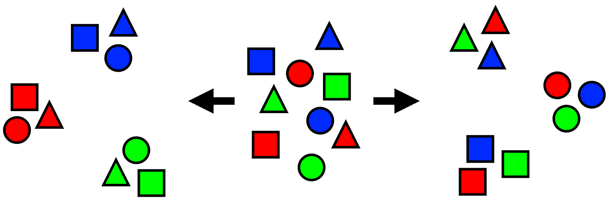

linelist <- import("linelist_cleaned.rds")Managing Data
Extended Materials
This week we will be diving deeper into operations needed for data analysis. We will look at how to manipulate column names, group data by its variables, and append datasets together.
We will be continuing with the same simulated Ebola outbreak dataset.
Column names
In R, column names are the “header” or “top” value of a column. They are used to refer to columns in the code, and serve as a default label in figures.
Other statistical software such as SAS and STATA use “labels” that co-exist as longer printed versions of the shorter column names. While R does offer the possibility of adding column labels to the data, this is not emphasized in most practice. To make column names “printer-friendly” for figures, one typically adjusts their display within the plotting commands that create the outputs.
As R column names are used very often, so they must have “clean” syntax. We suggest the following:
- Short names
- No spaces (replace with underscores _ )
- No unusual characters (&, #, <, >, …)
- Similar style nomenclature (e.g. all date columns named like date_onset, date_report, date_death…)
Re-naming columns manually is often necessary, even after the standardization step above. Below, re-naming is performed using the rename() function from the dplyr package, as part of a pipe chain. rename() uses the style NEW = OLD - the new column name is given before the old column name.
Below, a re-naming command is added to the cleaning pipeline. Spaces have been added strategically to align code for easier reading.
Now you can see that the columns names have been changed:
[1] "case_id" "generation" "date_infection"
[4] "date_onset" "date_hospitalisation" "date_outcome"
[7] "outcome" "gender" "age"
[10] "age_unit" "age_years" "age_cat"
[13] "age_cat5" "hospital" "lon"
[16] "lat" "infector" "source"
[19] "wt_kg" "ht_cm" "ct_blood"
[22] "fever" "chills" "cough"
[25] "aches" "vomit" "temp"
[28] "time_admission" "bmi" "days_onset_hosp" Rename by column position
You can also rename by column position, instead of column name, for example:
rename(newNameForFirstColumn = 1,
newNameForSecondColumn = 2)Rename via select() and summarise()
As a shortcut, you can also rename columns within the dplyr select() and summarise() functions. select() is used to keep only certain columns and summarise() is used when grouping data. These functions also uses the format new_name = old_name. Here is an example:
linelist_raw %>%
select(# NEW name # OLD name
date_infection = `infection date`, # rename and KEEP ONLY these columns
date_hospitalisation = `hosp date`)Other conisderations with column names
Empty Excel column names
R cannot have dataset columns that do not have column names (headers). So, if you import an Excel dataset with data but no column headers, R will fill-in the headers with names like “…1” or “…2”. The number represents the column number (e.g. if the 4th column in the dataset has no header, then R will name it “…4”).
You can clean these names manually by referencing their position number (see example above), or their assigned name (linelist_raw$...1).
Merged Excel column names and cells
Merged cells in an Excel file are a common occurrence when receiving data. Merged cells can be nice for human reading of data, but are not “tidy data” and cause many problems for machine reading of data. R cannot accommodate merged cells.
One solution to deal with merged cells is to import the data with the function readWorkbook() from the package openxlsx. Set the argument fillMergedCells = TRUE. This gives the value in a merged cell to all cells within the merge range.
linelist_raw <- openxlsx::readWorkbook("linelist_raw.xlsx", fillMergedCells = TRUE)Revisiting select
Two weeks ago we learned to use select() to select the columns we wanted to keep.
# linelist dataset is piped through select() command, and names() prints just the column names
linelist %>%
select(case_id, date_onset, date_hospitalisation, fever) %>%
names() # display the column names[1] "case_id" "date_onset" "date_hospitalisation"
[4] "fever" Let’s look at some more complicated scenarios when we need to think a bit deeper on how we’re selecting or choosing columns in our data.
“tidyselect” helper functions
These helper functions exist to make it easy to specify columns to keep, discard, or transform. They are from the package tidyselect, which is included in tidyverse and underlies how columns are selected in dplyr functions.
For example, if you want to re-order the columns, everything() is a useful function to signify “all other columns not yet mentioned”. The command below moves columns date_onset and date_hospitalisation to the beginning (left) of the dataset, but keeps all the other columns afterward. Note that everything() is written with empty parentheses:
# move date_onset and date_hospitalisation to beginning
linelist %>%
select(date_onset, date_hospitalisation, everything()) %>%
names() [1] "date_onset" "date_hospitalisation" "case_id"
[4] "generation" "date_infection" "date_outcome"
[7] "outcome" "gender" "age"
[10] "age_unit" "age_years" "age_cat"
[13] "age_cat5" "hospital" "lon"
[16] "lat" "infector" "source"
[19] "wt_kg" "ht_cm" "ct_blood"
[22] "fever" "chills" "cough"
[25] "aches" "vomit" "temp"
[28] "time_admission" "bmi" "days_onset_hosp" Here are other “tidyselect” helper functions that also work within dplyr functions like select(), across(), and summarise():
everything()- all other columns not mentioned
last_col()- the last column
where()- applies a function to all columns and selects those which are TRUE
contains()- columns containing a character string- example:
select(contains("time"))
- example:
starts_with()- matches to a specified prefix- example:
select(starts_with("date_"))
- example:
ends_with()- matches to a specified suffix- example:
select(ends_with("_post"))
- example:
matches()- to apply a regular expression (regex)- example:
select(matches("[pt]al"))
- example:
num_range()- a numerical range like x01, x02, x03
any_of()- matches IF column exists but returns no error if it is not found- example:
select(any_of(date_onset, date_death, cardiac_arrest))
- example:
In addition, use normal operators such as c() to list several columns, : for consecutive columns, ! for opposite, & for AND, and | for OR.
Use where() to specify logical criteria for columns. If providing a function inside where(), do not include the function’s empty parentheses. The command below selects columns that are class Numeric.
# select columns that are class Numeric
linelist %>%
select(where(is.numeric)) %>%
names() [1] "generation" "age" "age_years" "lon"
[5] "lat" "wt_kg" "ht_cm" "ct_blood"
[9] "temp" "bmi" "days_onset_hosp"Use contains() to select only columns in which the column name contains a specified character string. ends_with() and starts_with() provide more nuance.
# select columns containing certain characters
linelist %>%
select(contains("date")) %>%
names()[1] "date_infection" "date_onset" "date_hospitalisation"
[4] "date_outcome" The function matches() works similarly to contains() but can be provided a regular expression, such as multiple strings separated by OR bars within the parentheses:
# searched for multiple character matches
linelist %>%
select(matches("onset|hosp|fev")) %>% # note the OR symbol "|"
names()[1] "date_onset" "date_hospitalisation" "hospital"
[4] "fever" "days_onset_hosp" Deduplication
In a later week we will learn more about how to de-duplicate data. Only a very simple row de-duplication example is presented here.
The package dplyr offers the distinct() function. This function examines every row and reduce the data frame to only the unique rows. That is, it removes rows that are 100% duplicates.
When evaluating duplicate rows, it takes into account a range of columns - by default it considers all columns. As shown in the de-duplication page, you can adjust this column range so that the uniqueness of rows is only evaluated in regards to certain columns.
In this simple example, we just add the empty command distinct() to the pipe chain. This ensures there are no rows that are 100% duplicates of other rows (evaluated across all columns).
We begin with nrow(linelist) rows in linelist.
linelist <- linelist %>%
distinct()After de-duplication there are nrow(linelist) rows. Any removed rows would have been 100% duplicates of other rows.
Grouping data

Grouping data is a core component of data management and analysis. Grouped data statistically summarised by group, and can be plotted by group. Functions from the dplyr package (part of the tidyverse) make grouping and subsequent operations quite easy.
We will be examining:
- Grouping data with the
group_by()function
- Un-grouping data
summarise()grouped data with statistics
- The difference between
count()andtally()
arrange()applied to grouped data
filter()applied to grouped data
mutate()applied to grouped data
select()applied to grouped data
- The base R
aggregate()command as an alternative
Let’s load a clean version of the simulated Ebola epidemic dataset.
linelist <- import("linelist_cleaned.rds")Grouping
The function group_by() from dplyr groups the rows by the unique values in the column specified to it. If multiple columns are specified, rows are grouped by the unique combinations of values across the columns. Each unique value (or combination of values) constitutes a group. Subsequent changes to the dataset or calculations can then be performed within the context of each group.
For example, the command below takes the linelist and groups the rows by unique values in the column outcome, saving the output as a new data frame ll_by_outcome. The grouping column(s) are placed inside the parentheses of the function group_by().
ll_by_outcome <- linelist %>%
group_by(outcome)Note that there is no perceptible change to the dataset after running group_by(), until another dplyr verb such as mutate(), summarise(), or arrange() is applied on the “grouped” data frame.
You can however “see” the groupings by printing the data frame. When you print a grouped data frame, you will see it has been transformed into a tibble class object which, when printed, displays which groupings have been applied and how many groups there are - written just above the header row.
# print to see which groups are active
ll_by_outcome# A tibble: 5,888 × 30
# Groups: outcome [3]
case_id generation date_infection date_onset date_hospitalisation
<chr> <dbl> <date> <date> <date>
1 5fe599 4 2014-05-08 2014-05-13 2014-05-15
2 8689b7 4 NA 2014-05-13 2014-05-14
3 11f8ea 2 NA 2014-05-16 2014-05-18
4 b8812a 3 2014-05-04 2014-05-18 2014-05-20
5 893f25 3 2014-05-18 2014-05-21 2014-05-22
6 be99c8 3 2014-05-03 2014-05-22 2014-05-23
7 07e3e8 4 2014-05-22 2014-05-27 2014-05-29
8 369449 4 2014-05-28 2014-06-02 2014-06-03
9 f393b4 4 NA 2014-06-05 2014-06-06
10 1389ca 4 NA 2014-06-05 2014-06-07
# ℹ 5,878 more rows
# ℹ 25 more variables: date_outcome <date>, outcome <chr>, gender <chr>,
# age <dbl>, age_unit <chr>, age_years <dbl>, age_cat <fct>, age_cat5 <fct>,
# hospital <chr>, lon <dbl>, lat <dbl>, infector <chr>, source <chr>,
# wt_kg <dbl>, ht_cm <dbl>, ct_blood <dbl>, fever <chr>, chills <chr>,
# cough <chr>, aches <chr>, vomit <chr>, temp <dbl>, time_admission <chr>,
# bmi <dbl>, days_onset_hosp <dbl>Unique groups
The groups created reflect each unique combination of values across the grouping columns.
To see the groups and the number of rows in each group, pass the grouped data to tally(). To see just the unique groups without counts you can pass to group_keys().
See below that there are three unique values in the grouping column outcome: “Death”, “Recover”, and NA. See that there were nrow(linelist %>% filter(outcome == "Death")) deaths, nrow(linelist %>% filter(outcome == "Recover")) recoveries, and nrow(linelist %>% filter(is.na(outcome))) with no outcome recorded.
linelist %>%
group_by(outcome) %>%
tally()# A tibble: 3 × 2
outcome n
<chr> <int>
1 Death 2582
2 Recover 1983
3 <NA> 1323You can group by more than one column. Below, the data frame is grouped by outcome and gender, and then tallied. Note how each unique combination of outcome and gender is registered as its own group - including missing values for either column.
linelist %>%
group_by(outcome, gender) %>%
tally()# A tibble: 9 × 3
# Groups: outcome [3]
outcome gender n
<chr> <chr> <int>
1 Death f 1227
2 Death m 1228
3 Death <NA> 127
4 Recover f 953
5 Recover m 950
6 Recover <NA> 80
7 <NA> f 627
8 <NA> m 625
9 <NA> <NA> 71New columns
You can also create a new grouping column within the group_by() statement. This is equivalent to calling mutate() before the group_by(). For a quick tabulation this style can be handy, but for more clarity in your code consider creating this column in its own mutate() step and then piping to group_by().
# group dat based on a binary column created *within* the group_by() command
linelist %>%
group_by(
age_class = ifelse(age >= 18, "adult", "child")) %>%
tally(sort = T)# A tibble: 3 × 2
age_class n
<chr> <int>
1 child 3618
2 adult 2184
3 <NA> 86Add/drop grouping columns
By default, if you run group_by() on data that are already grouped, the old groups will be removed and the new one(s) will apply. If you want to add new groups to the existing ones, include the argument .add = TRUE.
# Grouped by outcome
by_outcome <- linelist %>%
group_by(outcome)
# Add grouping by gender in addition
by_outcome_gender <- by_outcome %>%
group_by(gender, .add = TRUE)** Keep all groups**
If you group on a column of class factor there may be levels of the factor that are not currently present in the data. If you group on this column, by default those non-present levels are dropped and not included as groups. To change this so that all levels appear as groups (even if not present in the data), set .drop = FALSE in your group_by() command.
Un-group
Data that have been grouped will remain grouped until specifically ungrouped via ungroup(). If you forget to ungroup, it can lead to incorrect calculations! Below is an example of removing all groupings:
linelist %>%
group_by(outcome, gender) %>%
tally() %>%
ungroup()You can also remove grouping for only specific columns, by placing the column name inside ungroup().
linelist %>%
group_by(outcome, gender) %>%
tally() %>%
ungroup(gender) # remove the grouping by gender, leave grouping by outcome
Tip
The verb count() automatically ungroups the data after counting.
Summarise
The dplyr function summarise() (or summarize()) takes a data frame and converts it into a new summary data frame, with columns containing summary statistics that you define. On an ungrouped data frame, the summary statistics will be calculated from all rows. Applying summarise() to grouped data produces those summary statistics for each group.
The syntax of summarise() is such that you provide the name(s) of the new summary column(s), an equals sign, and then a statistical function to apply to the data, as shown below. For example, min(), max(), median(), or sd(). Within the statistical function, list the column to be operated on and any relevant argument (e.g. na.rm = TRUE). You can use sum() to count the number of rows that meet a logical criteria (with double equals ==).
Below is an example of summarise() applied without grouped data. The statistics returned are produced from the entire dataset.
# summary statistics on ungrouped linelist
linelist %>%
summarise(
n_cases = n(),
mean_age = mean(age_years, na.rm=T),
max_age = max(age_years, na.rm=T),
min_age = min(age_years, na.rm=T),
n_males = sum(gender == "m", na.rm=T)) n_cases mean_age max_age min_age n_males
1 5888 16.01831 84 0 2803In contrast, below is the same summarise() statement applied to grouped data. The statistics are calculated for each outcome group. Note how grouping columns will carry over into the new data frame.
# summary statistics on grouped linelist
linelist %>%
group_by(outcome) %>%
summarise(
n_cases = n(),
mean_age = mean(age_years, na.rm=T),
max_age = max(age_years, na.rm=T),
min_age = min(age_years, na.rm=T),
n_males = sum(gender == "m", na.rm=T))# A tibble: 3 × 6
outcome n_cases mean_age max_age min_age n_males
<chr> <int> <dbl> <dbl> <dbl> <int>
1 Death 2582 15.9 76 0 1228
2 Recover 1983 16.1 84 0 950
3 <NA> 1323 16.2 69 0 625Counts and tallies
count() and tally() provide similar functionality but are different. Read more about the distinction between tally() and count() here
tally()
tally() is shorthand for summarise(n = n()), and does not group data. Thus, to achieve grouped tallys it must follow a group_by() command. You can add sort = TRUE to see the largest groups first.
linelist %>%
tally() n
1 5888linelist %>%
group_by(outcome) %>%
tally(sort = TRUE)# A tibble: 3 × 2
outcome n
<chr> <int>
1 Death 2582
2 Recover 1983
3 <NA> 1323count()
In contrast, count() does the following:
- applies
group_by()on the specified column(s)
- applies
summarise()and returns columnnwith the number of rows per group
- applies
ungroup()
linelist %>%
count(outcome) outcome n
1 Death 2582
2 Recover 1983
3 <NA> 1323Just like with group_by() you can create a new column within the count() command:
linelist %>%
count(age_class = ifelse(age >= 18, "adult", "child"), sort = T) age_class n
1 child 3618
2 adult 2184
3 <NA> 86count() can be called multiple times, with the functionality “rolling up”. For example, to summarise the number of hospitals present for each gender, run the following. Note, the name of the final column is changed from default “n” for clarity (with name =).
linelist %>%
# produce counts by unique outcome-gender groups
count(gender, hospital) %>%
# gather rows by gender (3) and count number of hospitals per gender (6)
count(gender, name = "hospitals per gender" ) gender hospitals per gender
1 f 6
2 m 6
3 <NA> 6Add counts
In contrast to count() and summarise(), you can use add_count() to add a new column n with the counts of rows per group while retaining all the other data frame columns.
This means that a group’s count number, in the new column n, will be printed in each row of the group. For demonstration purposes, we add this column and then re-arrange the columns for easier viewing. See the section below on filter on group size for another example.
linelist %>%
as_tibble() %>% # convert to tibble for nicer printing
add_count(hospital) %>% # add column n with counts by hospital
select(hospital, n, everything()) # re-arrange for demo purposes# A tibble: 5,888 × 31
hospital n case_id generation date_infection date_onset
<chr> <int> <chr> <dbl> <date> <date>
1 Other 885 5fe599 4 2014-05-08 2014-05-13
2 Missing 1469 8689b7 4 NA 2014-05-13
3 St. Mark's Maternity Hosp… 422 11f8ea 2 NA 2014-05-16
4 Port Hospital 1762 b8812a 3 2014-05-04 2014-05-18
5 Military Hospital 896 893f25 3 2014-05-18 2014-05-21
6 Port Hospital 1762 be99c8 3 2014-05-03 2014-05-22
7 Missing 1469 07e3e8 4 2014-05-22 2014-05-27
8 Missing 1469 369449 4 2014-05-28 2014-06-02
9 Missing 1469 f393b4 4 NA 2014-06-05
10 Missing 1469 1389ca 4 NA 2014-06-05
# ℹ 5,878 more rows
# ℹ 25 more variables: date_hospitalisation <date>, date_outcome <date>,
# outcome <chr>, gender <chr>, age <dbl>, age_unit <chr>, age_years <dbl>,
# age_cat <fct>, age_cat5 <fct>, lon <dbl>, lat <dbl>, infector <chr>,
# source <chr>, wt_kg <dbl>, ht_cm <dbl>, ct_blood <dbl>, fever <chr>,
# chills <chr>, cough <chr>, aches <chr>, vomit <chr>, temp <dbl>,
# time_admission <chr>, bmi <dbl>, days_onset_hosp <dbl>Add totals
To easily add total sum rows or columns after using tally() or count() you can use the tabyl function from janitor. This package also offers functions like adorn_totals() and adorn_percentages() to add totals and convert to show percentages. Below is a brief example:
linelist %>% # case linelist
tabyl(age_cat, gender) %>% # cross-tabulate counts of two columns
adorn_totals(where = "row") %>% # add a total row
adorn_percentages(denominator = "col") %>% # convert to proportions with column denominator
adorn_pct_formatting() %>% # convert proportions to percents
adorn_ns(position = "front") %>% # display as: "count (percent)"
adorn_title( # adjust titles
row_name = "Age Category",
col_name = "Gender") Gender
Age Category f m NA_
0-4 640 (22.8%) 416 (14.8%) 39 (14.0%)
5-9 641 (22.8%) 412 (14.7%) 42 (15.1%)
10-14 518 (18.5%) 383 (13.7%) 40 (14.4%)
15-19 359 (12.8%) 364 (13.0%) 20 (7.2%)
20-29 468 (16.7%) 575 (20.5%) 30 (10.8%)
30-49 179 (6.4%) 557 (19.9%) 18 (6.5%)
50-69 2 (0.1%) 91 (3.2%) 2 (0.7%)
70+ 0 (0.0%) 5 (0.2%) 1 (0.4%)
<NA> 0 (0.0%) 0 (0.0%) 86 (30.9%)
Total 2,807 (100.0%) 2,803 (100.0%) 278 (100.0%)Arranging grouped data
Using the dplyr verb arrange() to order the rows in a data frame behaves the same when the data are grouped, unless you set the argument .by_group =TRUE. In this case the rows are ordered first by the grouping columns and then by any other columns you specify to arrange().
Filter on grouped data
filter()
When applied in conjunction with functions that evaluate the data frame (like max(), min(), mean()), these functions will now be applied to the groups. For example, if you want to filter and keep rows where patients are above the median age, this will now apply per group - filtering to keep rows above the group’s median age.
Slice rows per group
The dplyr function slice(), which filters rows based on their position in the data, can also be applied per group. Remember to account for sorting the data within each group to get the desired “slice”.
For example, to retrieve only the latest 5 admissions from each hospital:
- Group the linelist by column
hospital
- Arrange the records from latest to earliest
date_hospitalisationwithin each hospital group
- Slice to retrieve the first 5 rows from each hospital
linelist %>%
group_by(hospital) %>%
arrange(hospital, date_hospitalisation) %>%
slice_head(n = 5) %>%
arrange(hospital) %>% # for display
select(case_id, hospital, date_hospitalisation) # for display# A tibble: 30 × 3
# Groups: hospital [6]
case_id hospital date_hospitalisation
<chr> <chr> <date>
1 20b688 Central Hospital 2014-05-06
2 d58402 Central Hospital 2014-05-10
3 b8f2fd Central Hospital 2014-05-13
4 acf422 Central Hospital 2014-05-28
5 275cc7 Central Hospital 2014-05-28
6 d1fafd Military Hospital 2014-04-17
7 974bc1 Military Hospital 2014-05-13
8 6a9004 Military Hospital 2014-05-13
9 09e386 Military Hospital 2014-05-14
10 865581 Military Hospital 2014-05-15
# ℹ 20 more rowsslice_head() - selects n rows from the top
slice_tail() - selects n rows from the end
slice_sample() - randomly selects n rows
slice_min() - selects n rows with highest values in order_by = column, use with_ties = TRUE to keep ties
slice_max() - selects n rows with lowest values in order_by = column, use with_ties = TRUE to keep ties
Filter on group size
The function add_count() adds a column n to the original data giving the number of rows in that row’s group.
Shown below, add_count() is applied to the column hospital, so the values in the new column n reflect the number of rows in that row’s hospital group. Note how values in column n are repeated. In the example below, the column name n could be changed using name = within add_count(). For demonstration purposes we re-arrange the columns with select().
linelist %>%
as_tibble() %>%
add_count(hospital) %>% # add "number of rows admitted to same hospital as this row"
select(hospital, n, everything())# A tibble: 5,888 × 31
hospital n case_id generation date_infection date_onset
<chr> <int> <chr> <dbl> <date> <date>
1 Other 885 5fe599 4 2014-05-08 2014-05-13
2 Missing 1469 8689b7 4 NA 2014-05-13
3 St. Mark's Maternity Hosp… 422 11f8ea 2 NA 2014-05-16
4 Port Hospital 1762 b8812a 3 2014-05-04 2014-05-18
5 Military Hospital 896 893f25 3 2014-05-18 2014-05-21
6 Port Hospital 1762 be99c8 3 2014-05-03 2014-05-22
7 Missing 1469 07e3e8 4 2014-05-22 2014-05-27
8 Missing 1469 369449 4 2014-05-28 2014-06-02
9 Missing 1469 f393b4 4 NA 2014-06-05
10 Missing 1469 1389ca 4 NA 2014-06-05
# ℹ 5,878 more rows
# ℹ 25 more variables: date_hospitalisation <date>, date_outcome <date>,
# outcome <chr>, gender <chr>, age <dbl>, age_unit <chr>, age_years <dbl>,
# age_cat <fct>, age_cat5 <fct>, lon <dbl>, lat <dbl>, infector <chr>,
# source <chr>, wt_kg <dbl>, ht_cm <dbl>, ct_blood <dbl>, fever <chr>,
# chills <chr>, cough <chr>, aches <chr>, vomit <chr>, temp <dbl>,
# time_admission <chr>, bmi <dbl>, days_onset_hosp <dbl>It then becomes easy to filter for case rows who were hospitalized at a “small” hospital, say, a hospital that admitted fewer than 500 patients:
linelist %>%
add_count(hospital) %>%
filter(n < 500)Mutate on grouped data
To retain all columns and rows (not summarise) and add a new column containing group statistics, use mutate() after group_by() instead of summarise().
This is useful if you want group statistics in the original dataset with all other columns present - e.g. for calculations that compare one row to its group.
For example, this code below calculates the difference between a row’s delay-to-admission and the median delay for their hospital. The steps are:
- Group the data by hospital
- Use the column
days_onset_hosp(delay to hospitalisation) to create a new column containing the mean delay at the hospital of that row
- Calculate the difference between the two columns
We select() only certain columns to display, for demonstration purposes.
linelist %>%
# group data by hospital (no change to linelist yet)
group_by(hospital) %>%
# new columns
mutate(
# mean days to admission per hospital (rounded to 1 decimal)
group_delay_admit = round(mean(days_onset_hosp, na.rm=T), 1),
# difference between row's delay and mean delay at their hospital (rounded to 1 decimal)
diff_to_group = round(days_onset_hosp - group_delay_admit, 1)) %>%
# select certain rows only - for demonstration/viewing purposes
select(case_id, hospital, days_onset_hosp, group_delay_admit, diff_to_group)# A tibble: 5,888 × 5
# Groups: hospital [6]
case_id hospital days_onset_hosp group_delay_admit diff_to_group
<chr> <chr> <dbl> <dbl> <dbl>
1 5fe599 Other 2 2 0
2 8689b7 Missing 1 2.1 -1.1
3 11f8ea St. Mark's Maternity… 2 2.1 -0.1
4 b8812a Port Hospital 2 2.1 -0.1
5 893f25 Military Hospital 1 2.1 -1.1
6 be99c8 Port Hospital 1 2.1 -1.1
7 07e3e8 Missing 2 2.1 -0.1
8 369449 Missing 1 2.1 -1.1
9 f393b4 Missing 1 2.1 -1.1
10 1389ca Missing 2 2.1 -0.1
# ℹ 5,878 more rowsSelect on grouped data
The verb select() works on grouped data, but the grouping columns are always included (even if not mentioned in select()). If you do not want these grouping columns, use ungroup() first.
Appending Datasets
We often need to combine multiple sources of data. Later on we’ll see more complex methods for combining data based on matching ID’s or other values. However, to start we’ll look at the case where we want to add additional observations to a dataset. You can also think of this as “appending” or “adding” rows.
Bind rows
To bind rows of one data frame to the bottom of another data frame, use bind_rows() from dplyr. It is very inclusive, so any column present in either data frame will be included in the output. A few notes:
- Unlike the base R version
row.bind(), dplyr’sbind_rows()does not require that the order of columns be the same in both data frames. As long as the column names are spelled identically, it will align them correctly.
- You can optionally specify the argument
.id =. Provide a character column name. This will produce a new column that serves to identify which data frame each row originally came from.
- You can use
bind_rows()on alistof similarly-structured data frames to combine them into one data frame.
One common example of row binding is to bind a “total” row onto a descriptive table made with dplyr’s summarise() function. Below we create a table of case counts and median CT values by hospital with a total row.
The function summarise() is used on data grouped by hospital to return a summary data frame by hospital. But the function summarise() does not automatically produce a “totals” row, so we create it by summarising the data again, but with the data not grouped by hospital. This produces a second data frame of just one row. We can then bind these data frames together to achieve the final table.
# Create core table
###################
hosp_summary <- linelist %>%
group_by(hospital) %>% # Group data by hospital
summarise( # Create new summary columns of indicators of interest
cases = n(), # Number of rows per hospital-outcome group
ct_value_med = median(ct_blood, na.rm=T)) # median CT value per groupHere is the hosp_summary data frame:
Create a data frame with the “total” statistics (not grouped by hospital). This will return just one row.
# create totals
###############
totals <- linelist %>%
summarise(
cases = n(), # Number of rows for whole dataset
ct_value_med = median(ct_blood, na.rm=T)) # Median CT for whole datasetAnd below is that totals data frame. Note how there are only two columns. These columns are also in hosp_summary, but there is one column in hosp_summary that is not in totals (hospital).
cases ct_value_med
1 5888 22Now we can bind the rows together with bind_rows().
# Bind data frames together
combined <- bind_rows(hosp_summary, totals)Now we can view the result. See how in the final row, an empty NA value fills in for the column hospital that was not in hosp_summary.
# A tibble: 7 × 3
hospital cases ct_value_med
<chr> <int> <dbl>
1 Central Hospital 454 22
2 Military Hospital 896 21
3 Missing 1469 21
4 Other 885 22
5 Port Hospital 1762 22
6 St. Mark's Maternity Hospital (SMMH) 422 22
7 <NA> 5888 22